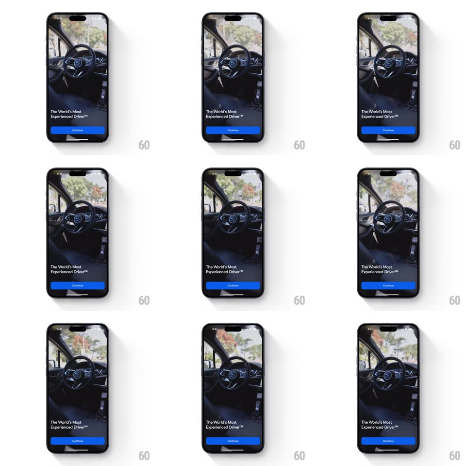

Media
Frame-by-frame

Rebuild this animation 1:1: Waymo's onboarding intro - a full-screen ambient video of a self-driving car interior whose steering wheel turns on its own, under the "The World's Most Experienced Driver" copy and a Continue button.

Rebuild this animation 1:1: Waymo's onboarding intro - a full-screen ambient video of a self-driving car interior whose steering wheel turns on its own, under the "The World's Most Experienced Driver" copy and a Continue button. ## Integration Integration: stack-agnostic spec - springs given as stiffness/damping, timed motions as duration + curve; map every value to your framework and animation library of choice. ## Scene Full-bleed video of a car interior (driver seat empty, steering wheel center frame, daylight through the windows); bottom overlay: "The World's Most Experienced Driver(TM)" in white over a gradient scrim, and a blue Continue pill. ## Motion spec Pattern: ambient video backdrop. - Video: plays full-screen on entry (fade in from black, 400ms), loops seamlessly; the steering wheel rotates itself through the loop as the street passes outside. - Scrim: a bottom-up dark gradient (transparent -> 60% black) keeps the copy legible; it fades in with the video. - Copy and Continue: slide up 20px and fade in (300ms, ease-out, +150ms after the video starts). - The screen is otherwise static - all motion lives in the video. ## Calibration - The video is cover-fit, center-cropped; the wheel stays mid-frame on all aspect ratios. - The loop point is invisible - wheel position and street match at the seam. ## Reduced motion Video autoplays as normal; no parallax or extra motion to remove. ## Don't miss - The wheel turns with no hands on it - that is the point of the shot. - The scrim belongs to the layout, not the video.